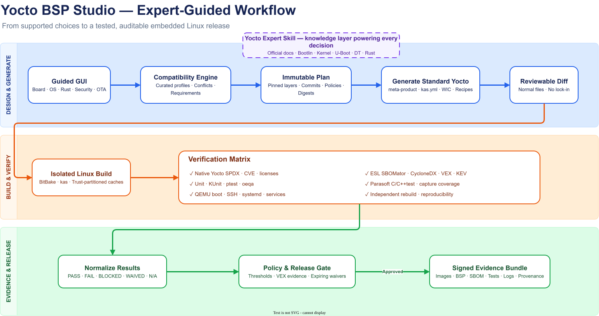

1
Hiring bottleneck
Specialists must understand hardware, boot firmware, kernel, Device Tree, BitBake, packaging, security, and release operations.
A guided BSP engineering platform that turns scarce expert knowledge into a repeatable workflow—so a capable embedded developer can deliver with expert-level guardrails.
Experienced BSP engineers combine knowledge across the entire boot and Linux stack. When one becomes available, competition is immediate—and every new board restarts the same high-risk learning curve.
Specialists must understand hardware, boot firmware, kernel, Device Tree, BitBake, packaging, security, and release operations.
Critical decisions live in individual experience, vendor BSPs, scattered manuals, old recipes, and undocumented debugging history.
A successful build is not enough. Teams still need tests, static analysis, SBOM, CVEs, licenses, VEX, provenance, and release evidence.
Knowing which layers, versions, patches, machine settings, kernel fragments, and image policies form a maintainable product is the scarce capability.
Reference-board success does not prove a custom PCB. Clocks, regulators, DDR, PHYs, interrupts, storage, and power behavior remain board-specific.
A GUI exposes only supported choices and explains their consequences.
A Yocto skill captures official, versioned engineering knowledge and troubleshooting practice.
Deterministic templates produce standard layers, pinned builds, tests, and evidence.
Release gates require machine-readable evidence—not confidence, memory, or a green build alone.
A standard embedded developer becomes an effective Yocto BSP practitioner—with guardrails, automation, and escalation points.

A compatibility engine prevents invalid combinations. Expert overrides remain possible later—but are marked unsupported until validated.
The skill assists decisions. Deterministic schemas, catalogs, templates, and validators remain the release source of truth.
Pin every layer, commit, tool, template, source revision, test policy, and worker image by digest.
Run BitBake in an isolated container for trusted MVP inputs and disposable VMs when customer-controlled layers arrive.
Export normal `meta-product` files, `kas.yml`, images, logs, and manifests. The project remains usable outside the GUI.
BitBake metadata executes code—even during parsing. The control plane never executes customer recipes directly.
| Layer | What we run | What it proves |
|---|---|---|
| Generator | Schema, compatibility, deterministic rendering | The same intent produces the same metadata |
| Yocto metadata | kas validation, BitBake parse, layer and package QA | The generated project is structurally valid |
| Components | Unit tests, Rust tests, C/C++ tests, KUnit, ptest | Selected components behave as expected |
| Runtime | QEMU + oeqa/testimage: boot, SSH, systemd, logs, services | The supported virtual target boots and operates |
| Release | Independent rebuild and diff evidence | The candidate meets the chosen reproducibility policy |
An opt-in BitBake class records the actual target compiler invocations into a BDF or validated compilation database.
C/C++test runs offline with the exact compiler family, version, architecture, ruleset, and baseline.
The gate reconciles expected versus captured translation units. Empty or incomplete capture cannot appear as “zero findings.”
CycloneDX 1.6, supplier enrichment, licenses, containers, firmware images, binaries, kernel modules, and package ecosystems.
Syft/CDXgen inventory with Grype, OSV, local vulnerability data, CISA KEV intelligence, severity, and CVE links.
Interactive reports and dashboard, persistent VEX suppressions, report diff/progress, database health, and false-positive management.
Reconcile native image SPDX, manifests, Yocto CVE status, applied fixes, licenses, and SBOMator findings.
Native Yocto evidence remains authoritative for the final image; SBOMator enriches, cross-checks, triages, and reports.
Capabilities shown as “SBOMator now” are based on the current `C:\SBOMATOR-1-3-x` product. Yocto evidence fusion is part of this product integration.
Required evidence that is missing, unavailable, or failed blocks release. Unknown never becomes pass.
Success means a capable embedded developer completes a repeatable BSP workflow—with fewer expert interventions and stronger evidence.